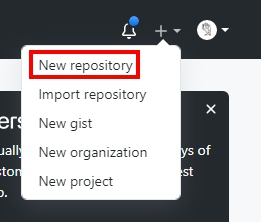
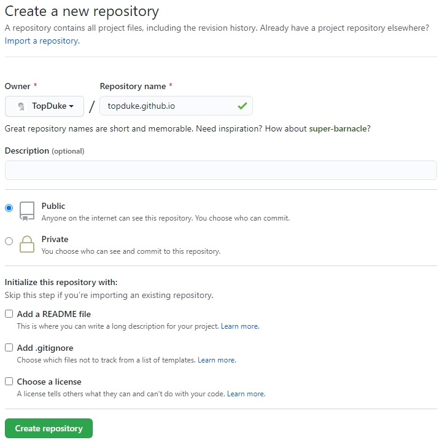

環境配置
Github Page 設定
Step 1 : 新增 repositoy

Step 2 : 建立 repositoy

Hexo 安裝
1 | npm install hexo-cli -g |
Step 1 : 建立
1 | hexo init <folder> |
Step 2 : NexT 主題新增
1 | git clone https://github.com/theme-next/hexo-theme-next.git themes/next |
Step 3 : 設定 _config.yml
1 | # Site |
Step 3 : NexT Scheme 設定 theme/next/_config.yml
1 | # --------------------------------------------------------------- |
Hexo 基本指令
1 | hexo g 產生靜態檔案，會在目錄下產生 public 資料夾。 |
Hexo 上傳步驟
1 | hexo clean |